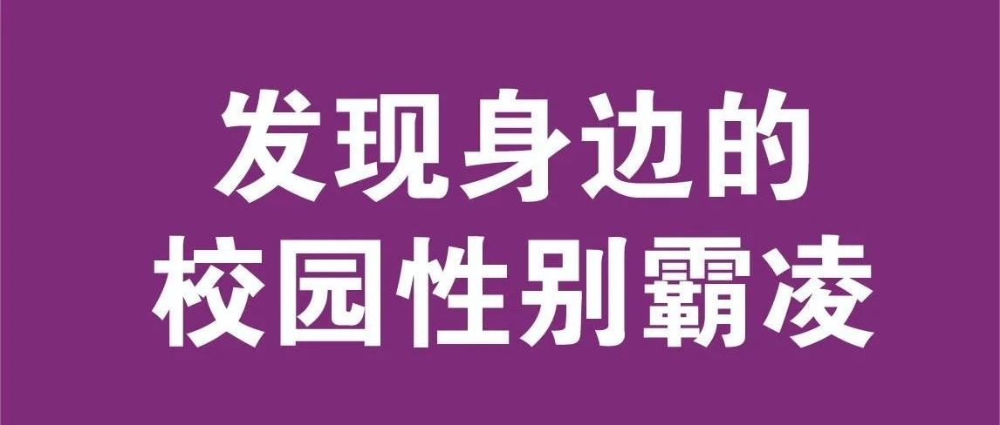

紫色校园纪念日 | 纪念悲剧，拒绝欺凌
Spirit Day
紫色校园纪念日
Keep shining. Keep staying strong
今年10月15日是紫色校园纪念日，为了反对针对同性恋、双性恋和跨性别儿童、青少年群体的欺凌行为设立。
歧视正在杀人

2000年，台湾国中三年级学生叶永鋕，因为举止“女性化”而屡屡被同学霸凌。尽管他的母亲曾经向学校反映，学校却未作任何处理。4月，他被发现倒在学校厕所的血泊中，不治身亡。他的死因被判定为身体原因导致的突然晕倒，晕倒时头部受到重创。但他真正的“死因”，是因为他受到霸凌、同学会在他如厕时扒他的裤子，他只能在厕所无人的时候进去如厕，以至于事情发生时也没有受到及时的救治——他间接死于性别刻板印象带来的暴力与霸凌。他死后，他的母亲成为了性少数平权运动的斗士。叶永鋕被称为“玫瑰少年”，他未必是一个gay，只是不符合人们对于所谓阳刚气质的期待，就过早凋谢。


紫色纪念日

同霓邀您一起行动


图文：Letong
排版：恋爱过敏
保持闪耀，相信你是特别的，你是被爱的